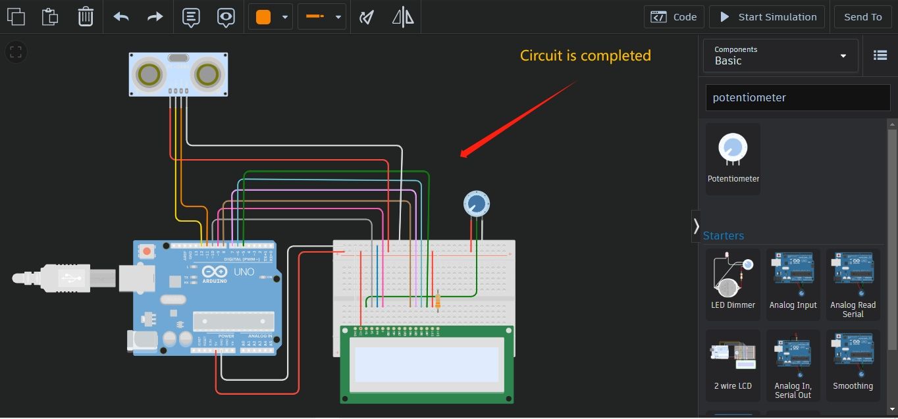
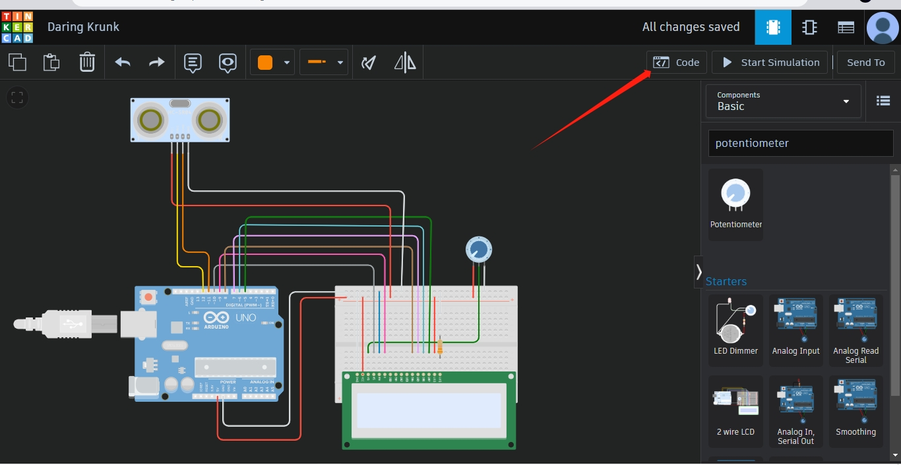
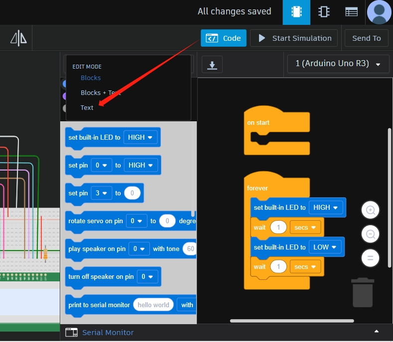
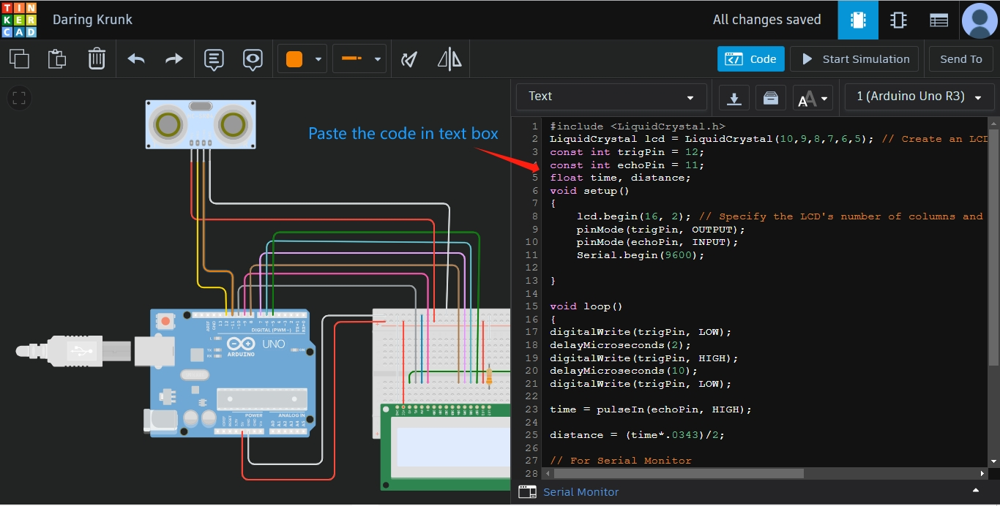
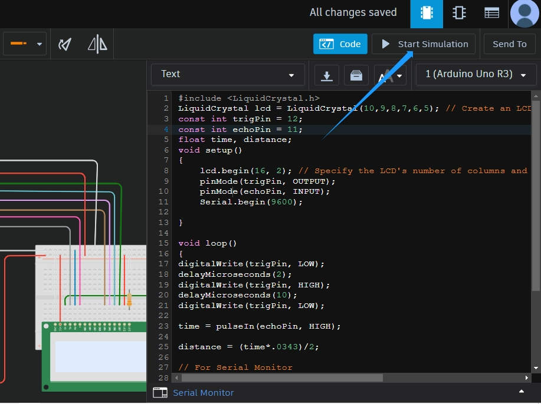
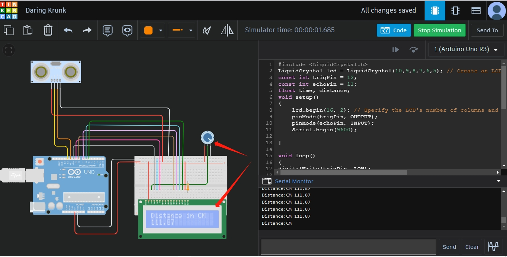
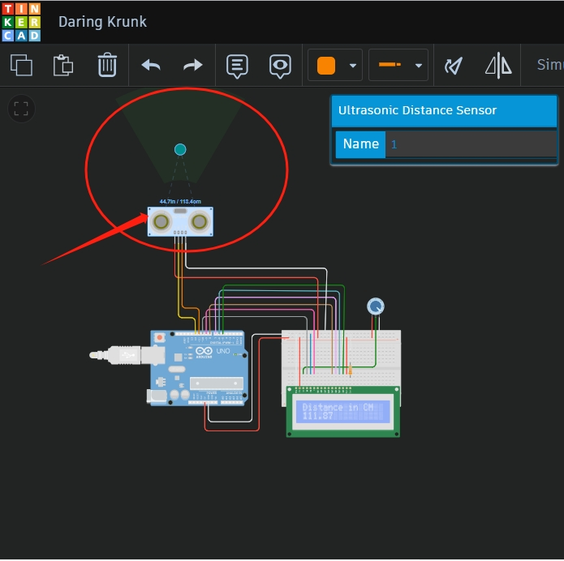
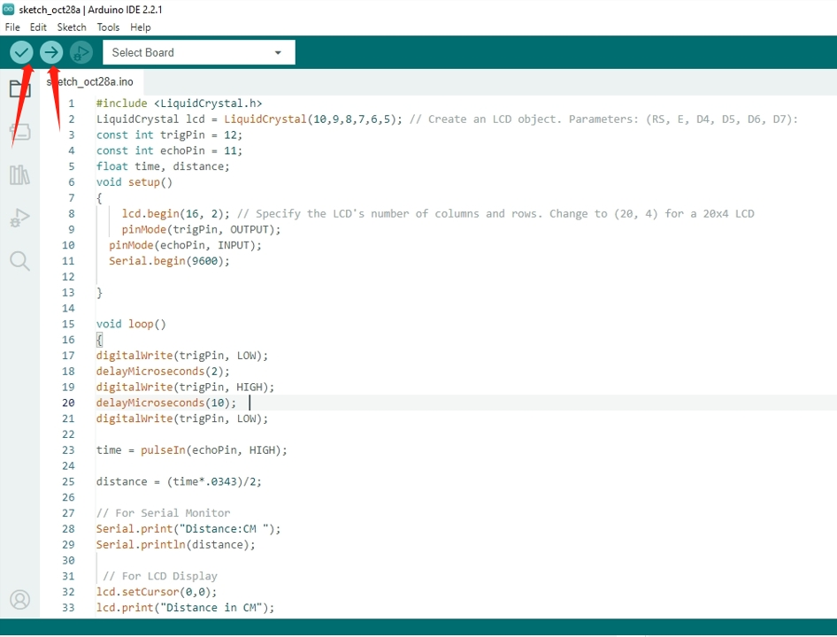
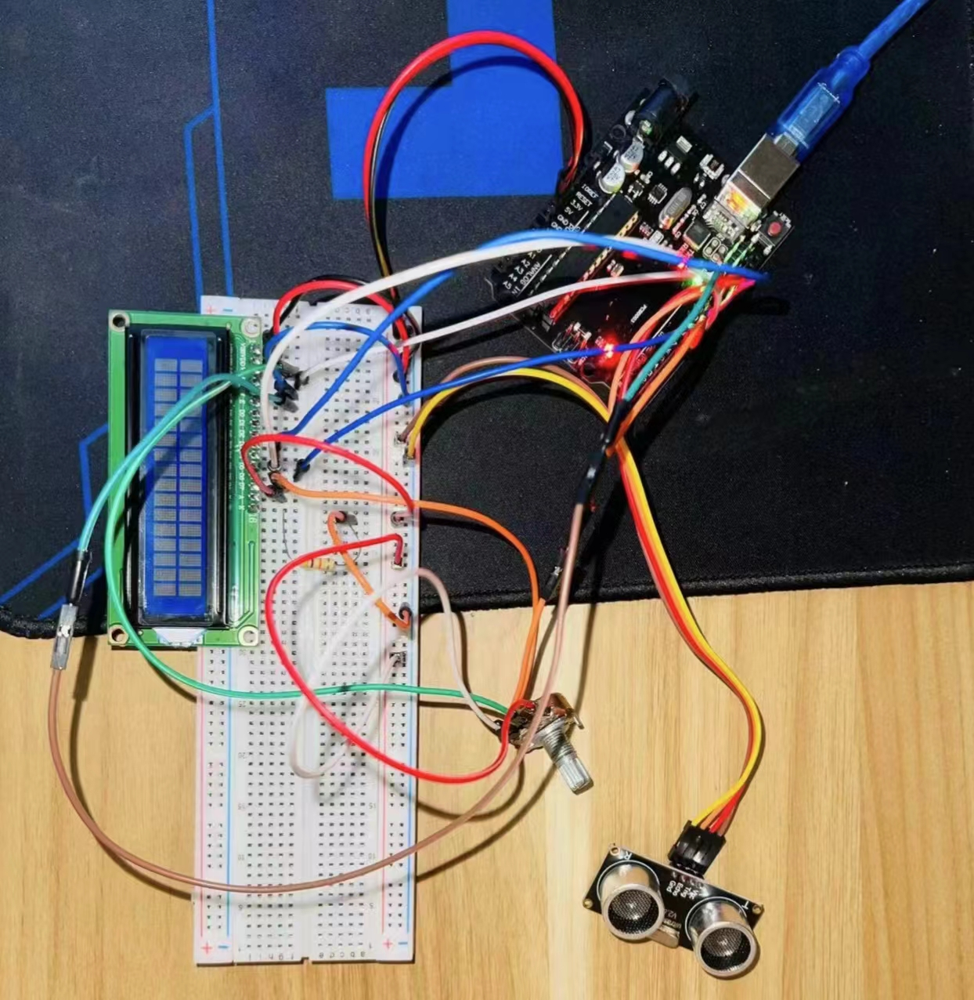

Distance Measuring using Ultrasonic Sensor
Components:
- Arduino Uno R3
- LCD 16 x 2
- Ultrasonic Distance Sensor
- 220 Ω Resistor
- 250 Ω Potentiometer

Image 1: From the search bar, choose Arduino, breadboard, LCD, ultrasonic, and potentiometer.
Image 2: First, attach GND and VCC (positive and negative sites) of Arduino to the breadboard ( Negative Site ). Attach the LCD now, and adjust the value of resistance 330 whom by connecting the resistance LCD cathode, GND to the Bread Boad GND Negative terminal, and VCC pin to the Breadboad VCC Positive terminal. Then connect to GND, as well as the potentiometer to VCC, the second terminal to GND, and the middle pin to the LCD's V0 pin. Connect the RW pin to GND (negative), the E pin to the Arduino's 9th pin, the DB4 pin to the eighth pin, the DB5 pin to the 7th, the DB6 pin to the 6th, and the final pin, DB7, to the 5th pin of the Arduino. LCD Pin 5 is finished.
Image 3: Select LCD
Image 4: search the Ultrasonic distance
Image 5: take Potentiometer from search bar and also take one Resistance
Image 6: Now open the code option and select the “text” option and write down on your code and Launch the simulation now
Image 7:observe that the potentiometer's LCD is printing on the display
Image 8: When the optical distance from the ultrasonic sensor is great, the value is decreasing, and when the optical distance from the ultrasonic censor is close, the value is increasing
Image 9: copy the code from the Tinker CAD into the Arduino IDE. And insert the code into the Arduino IDE software. Next, use the data cable to upload the code to the Arduino Uno after checking it
Code
xxxxxxxxxxxx
Image 10: Project Implementation